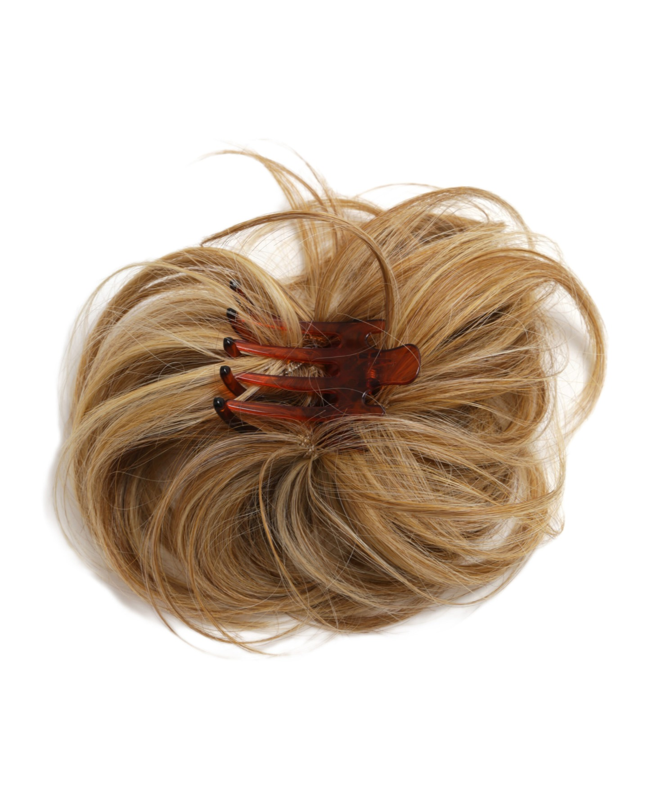
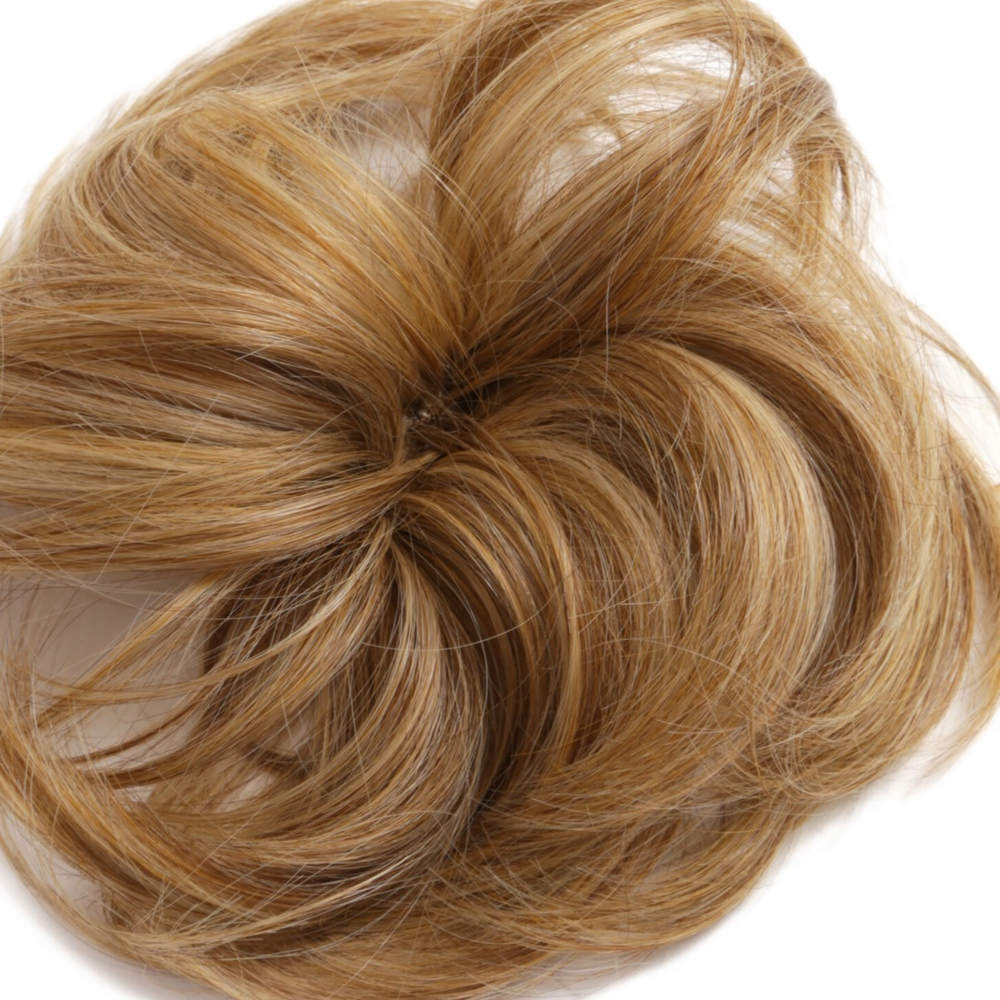
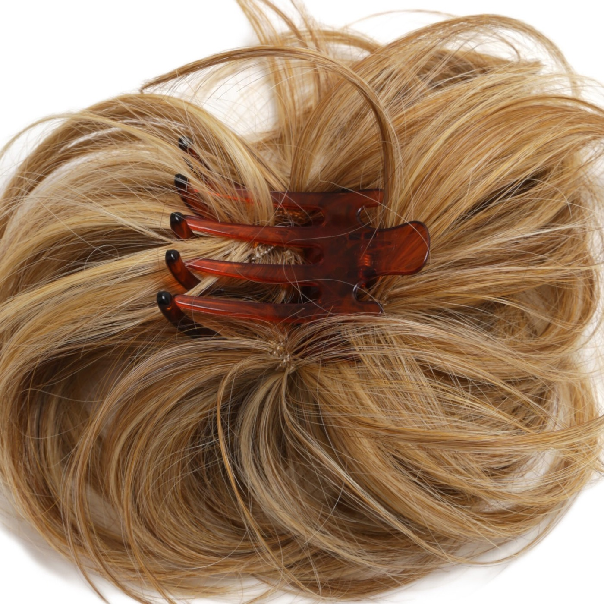
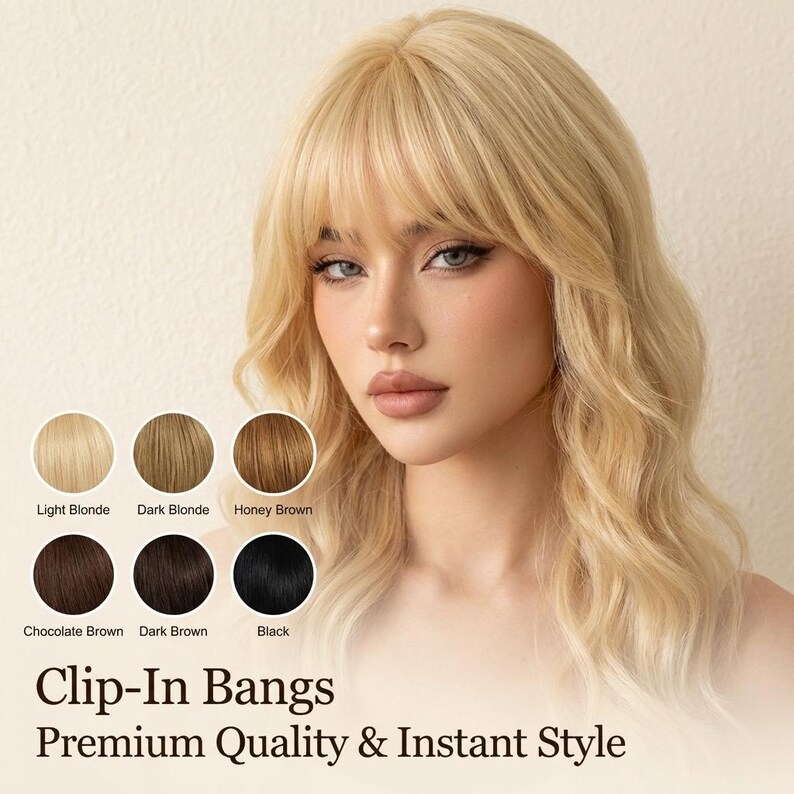
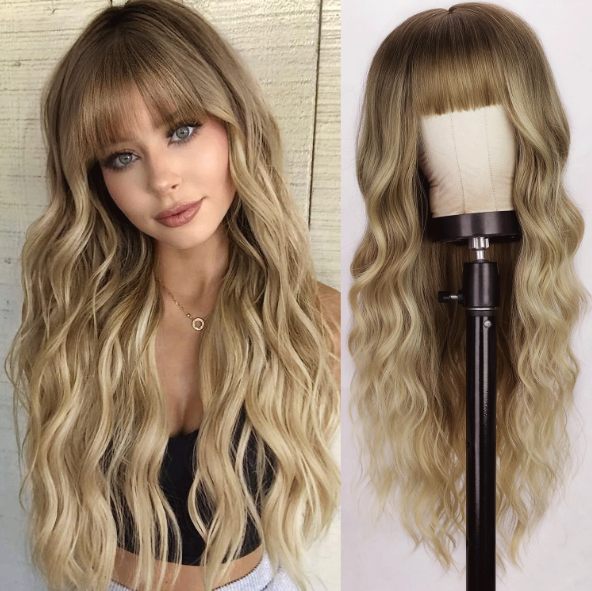

Clip hold and comfort
Check opening force, tooth finish, spring recovery, head contact and security during normal movement.




DS HAIR · Synthetic Wigs & Hairpieces
PRODUCT CODE · DS-HPC-SY-001
A softly waved synthetic chignon reference for professional buyers developing quick updo, bun and occasion-hair ranges. The photographed reference uses a contoured claw clip; production fibre, colour, hardware and commercial terms are confirmed against the approved sample and written specification.
Commercial terms and unconfirmed technical details are provided only after specification review.
BUILD YOUR BUYING BRIEF
These controls prepare an enquiry; they do not indicate live stock. Final feasibility, MOQ, price and lead time are confirmed in writing.
PRIMARY COLOUR SYSTEM
Screen colour is for initial selection only. Final shade approval should use a physical colour ring or confirmed sample. Where the source chart has no published shade code, Ref numbers are temporary website identifiers only.
REQUEST A PHYSICAL COLOUR KIT →BUYER ANSWER
A softly waved synthetic chignon reference for professional buyers developing quick updo, bun and occasion-hair ranges. The photographed reference uses a contoured claw clip; production fibre, colour, hardware and commercial terms are confirmed against the approved sample and written specification.
EVALUATION POINTS
Use a representative sample to turn visual impressions into an approved, repeatable product reference.
Check opening force, tooth finish, spring recovery, head contact and security during normal movement.
Review how the waved fibre is arranged, anchored and distributed so the chignon keeps coverage without exposed hardware.
Compare shine, hand, tangling, wave recovery and controlled heat response against the written fibre specification.
Approve the base, highlight and lowlight proportions under neutral light using a physical colour reference.
Keep a sealed sample and record dimensions, grams, clip specification, colour blend and packing method for reorders.
FORMAT COMPARISON
A claw-clip chignon offers a fast, pre-shaped result, while wraps, drawstrings and ponytails create different fitting and styling expectations.
Scroll horizontally to compare methods →
| Buyer question | Claw-Clip Chignon | Elastic Bun Wrap | Drawstring Updo | Full Ponytail |
|---|---|---|---|---|
| Product format | Pre-shaped looped chignon | Flexible fibre wrap | Gathered updo piece | Length-led ponytail piece |
| Attachment | Contoured claw clip | Elastic base | Drawstring and combs | Wrap, clip or drawstring |
| Key buyer check | Clip hold and hardware coverage | Elastic recovery and bun fit | Cord security and base coverage | Weight distribution and attachment comfort |
| Sample focus | Silhouette, loop memory, shine and clip performance | Wrap volume, fibre spread and recovery | Base size, tightening and finished shape | Length, fall, attachment and movement |
Attachment type changes the fit, comfort and finished silhouette. Approve the product as a complete system rather than evaluating fibre or hardware in isolation.
THE DS HAIR DIFFERENCE
We compare the way a project is managed—not make unverified statements about another supplier’s hair.
SPECIFICATION STATUS
DS HAIR does not publish assumptions as product specifications. Open items are confirmed against the selected supply batch and quotation.
OEM / PRIVATE LABEL
PROFESSIONAL PRODUCT KNOWLEDGE
Practical guidance for salons, distributors and private-label teams. Product-specific claims still require sample approval.
It is a pre-shaped synthetic updo that attaches over the wearer's own bun or gathered hair. This reference uses a contoured claw clip to create a fast, softly looped chignon silhouette.
Review opening force, tooth edges, spring recovery, contour, base colour, comfort and holding performance. The fibre should cover the hardware in the intended wearing positions.
Record fibre family, diameter, shine, hand, wave memory, heat-care claim and test method. Heat resistance must never be inferred from appearance or a generic synthetic description.
Use a physical shade reference under neutral light and record base, highlight and lowlight ratios. Multi-tonal blends often integrate more naturally than a single screen-selected colour.
Retain the approved sample and a specification covering fibre, finished dimensions, weight, clip hardware, loop arrangement, colour blend, care language, packaging and QC tolerances.
RELATED DEVELOPMENT DIRECTIONS
These are enquiry pathways, not live-stock listings. Each product requires its own specification and sample reference.

A lightweight clip-in crown-topper direction for professional buyers developing top-area coverage and layered-volume ranges. The cited reference documents front, crown, side and back lengths plus a heat-styleable synthetic direction; DS HAIR production construction, fibre and commercial terms require sample approval.
DISCUSS THIS PRODUCT →
A short layered beach-wave clip-in crown-topper direction for professional buyers developing top-area coverage and soft-volume ranges. The cited reference documents a heat-friendly synthetic direction, four length points and a 1.9 oz reference weight; DS HAIR production construction, fibre and colour match require sample approval.
DISCUSS THIS PRODUCT →
An instant fringe reference for professional buyers developing no-cut bangs ranges. The source reference documents a clip-in fringe hairpiece in heat-resistant synthetic fibre with a secure clip design and natural side pieces. DS HAIR production fibre, fringe length, clip specification, colours, tolerances and commercial terms remain subject to sample approval and written specification.
DISCUSS THIS PRODUCT →
A full synthetic wig reference for professional buyers developing ready-to-wear and private-label wig ranges. The photographed reference shows the display colour and cap finish; fibre, cap construction, length, density and commercial terms are confirmed against the approved sample and written specification.
DISCUSS THIS PRODUCT →BUYER QUESTIONS
It is presented as a B2B development reference. Share the target market, quantity range, colour direction and packaging requirement so feasibility and commercial terms can be confirmed.
The photographed reference uses a contoured claw clip. Production clip dimensions, colour, material and holding performance are confirmed against the approved sample.
Colour development can be reviewed against DS HAIR Colour Chart 2 or a buyer-supplied physical sample. Available shades, blend ratios and minimum quantities require written confirmation.
Do not assume a styling temperature from the reference image. The production fibre, care protocol and maximum tested temperature must be confirmed in writing before any heat-friendly claim is used.
State the target wearer, finished silhouette, colour, attachment preference, packaging direction, expected quantity and any required fibre or care performance.
REFERENCE · DS-HPC-SY-001
Send the target market, colour direction, attachment requirement, packaging brief and estimated quantity. DS HAIR will identify the sample and specification details needed before quotation.
SEND YOUR BUYING BRIEF